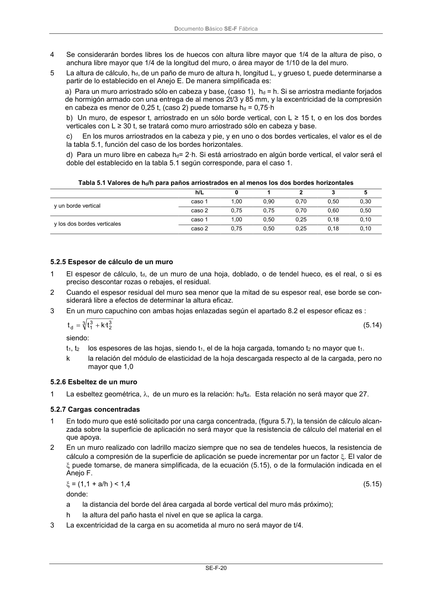

DB-SE-F Fábrica · edición 2019-12-20 · capa oficial
Documento DB-SE-F-oficial · SHA-256 del PDF e3e0805c3b4c307519c26dc34c3fdbf143d842edd013c91b0f52d2c73403d91c
Página física 24 de 70.
Copia fiel del PDF fuente · Fuente oficial
Ficha de la disposición en la fuente oficial
Formato: Texto de la página (Markdown)
Documento Básico SE-F Fábrica SE-F-20 4 Se considerarán bordes libres los de huecos con altura libre mayor que 1/4 de la altura de piso, o anchura libre mayor que 1/4 de la longitud del muro, o área mayor de 1/10 de la del muro. 5 La altura de cálculo, hd, de un paño de muro de altura h, longitud L, y grueso t, puede determinarse a partir de lo establecido en el Anejo E. De manera simplificada es: a) Para un muro arriostrado sólo en cabeza y base, (caso 1), hd = h. Si se arriostra mediante forjados de hormigón armado con una entrega de al menos 2t/3 y 85 mm, y la excentricidad de la compresión en cabeza es menor de 0,25 t, (caso 2) puede tomarse hd = 0,75·h b) Un muro, de espesor t, arriostrado en un sólo borde vertical, con L ≥ 15 t, o en los dos bordes verticales con L ≥ 30 t, se tratará como muro arriostrado sólo en cabeza y base. c) En los muros arriostrados en la cabeza y pie, y en uno o dos bordes verticales, el valor es el de la tabla 5.1, función del caso de los bordes horizontales. d) Para un muro libre en cabeza hd= 2·h. Si está arriostrado en algún borde vertical, el valor será el doble del establecido en la tabla 5.1 según corresponde, para el caso 1. Tabla 5.1 Valores de hd/h para paños arriostrados en al menos los dos bordes horizontales h/L 0 1 2 3 5 y un borde vertical caso 1 1,00 0,90 0,70 0,50 0,30 caso 2 0,75 0,75 0,70 0,60 0,50 y los dos bordes verticales caso 1 1,00 0,50 0,25 0,18 0,10 caso 2 0,75 0,50 0,25 0,18 0,10 5.2.5 Espesor de cálculo de un muro 1 El espesor de cálculo, td, de un muro de una hoja, doblado, o de tendel hueco, es el real, o si es preciso descontar rozas o rebajes, el residual. 2 Cuando el espesor residual del muro sea menor que la mitad de su espesor real, ese borde se con- siderará libre a efectos de determinar la altura eficaz. 3 En un muro capuchino con ambas hojas enlazadas según el apartado 8.2 el espesor eficaz es : 3 3 2 3 1 d t· k t t (5.14) siendo: t1, t2 los espesores de las hojas, siendo t1, el de la hoja cargada, tomando t2 no mayor que t1. k la relación del módulo de elasticidad de la hoja descargada respecto al de la cargada, pero no mayor que 1,0 5.2.6 Esbeltez de un muro 1 La esbeltez geométrica, de un muro es la relación: hd/td. Esta relación no será mayor que 27. 5.2.7 Cargas concentradas 1 En todo muro que esté solicitado por una carga concentrada, (figura 5.7), la tensión de cálculo alcan- zada sobre la superficie de aplicación no será mayor que la resistencia de cálculo del material en el que apoya. 2 En un muro realizado con ladrillo macizo siempre que no sea de tendeles huecos, la resistencia de cálculo a compresión de la superficie de aplicación se puede incrementar por un factor . El valor de puede tomarse, de manera simplificada, de la ecuación (5.15), o de la formulación indicada en el Anejo F. = (1,1 + a/h ) < 1,4 (5.15) donde: a la distancia del borde del área cargada al borde vertical del muro más próximo); h la altura del paño hasta el nivel en que se aplica la carga. 3 La excentricidad de la carga en su acometida al muro no será mayor de t/4.
